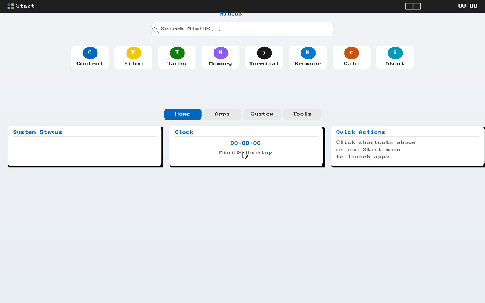
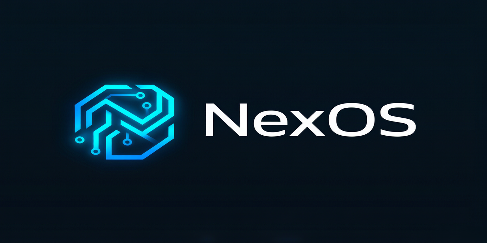

项目截图
以下为真实运行截图（含 Web 控制台 Win11 桌面、开始菜单、多窗口、暗色模式、通知中心、小组件，以及内核中文 GUI 与 Win32 应用运行）。

桌面（Win11 风格）

开始菜单

多窗口并排

暗色模式

通知中心

小组件面板

内核中文 GUI 渲染

运行 Win32 应用（自研 IE 浏览器）

自研 x86 操作系统 · 内核 · C# 桌面壳 · Web 控制台 · AI · 分布式算力
NexOS 是一个从零自研的 x86 操作系统：起点是一个支持 BIOS + UEFI 双引导、可切换 32/64 位保护模式的 C++ 内核与二阶引导加载器，如今已演进为 融合图形桌面、本地大模型推理、分布式算力网络与 Windows/Linux 兼容能力的全栈系统。 它以自研 C++ 内核为底座，叠加 C# 托管桌面壳、浏览器 Web 控制台、Qwen2 GGUF 推理引擎与 distnet/dcn 分布式算力运行时，是一个面向操作系统原理学习与实验的教学级全栈系统。
Stage1→Stage2 二阶引导，32 位保护模式 + 64 位长模式双内核，UEFI/BIOS 双路径汇合到同一 C++ 入口。
gui.cpp 在帧缓冲上自绘 Win11 风格桌面，叠加 C# 托管壳（NexOS.Forms / NexOS.Core）实现窗口管理器。
win11-ui/ 浏览器端 Win11 桌面 + 分布式网络面板 + Agent Forge，经 WebSocket 桥直连真 QEMU 内核。
ai_engine.cpp + 内置 Qwen2-0.5B GGUF Transformer 推理引擎，ask64 切换 64 位流式推理。
distnet.cpp UDP 发现/调度 + dcn/ 运行时，将推理/计算任务分片到多节点合并。
自研 PE/Win32 子系统、Linux 二进制兼容、Mono/.NET 运行时移植，可跑 Windows/Linux/.NET 程序。
以下为真实运行截图（含 Web 控制台 Win11 桌面、开始菜单、多窗口、暗色模式、通知中心、小组件，以及内核中文 GUI 与 Win32 应用运行）。

NexOS 已可运行、可联网、可跑 AI 推理与分布式算力。下一步重点（详见仓库 NEXOS_ROADMAP.md）：